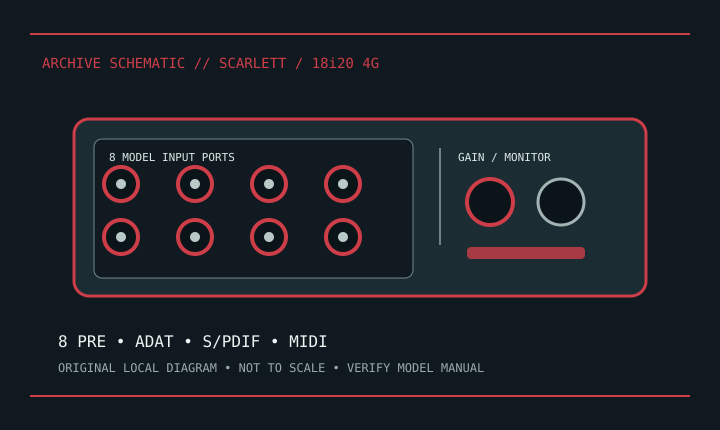

[ INDIVIDUAL COMPONENT // SOUND HARDWARE ]
Focusrite Scarlett 18i20 (4th Gen)
Fourth-generation 18i20 is an 18-in/20-out rackmount USB interface. Earlier 18i20 generations differ in converters, controls, and host connectivity.

Model-specific specifications
| Product | Scarlett 18i20 4th Generation; verify model/generation marking. |
|---|---|
| Host | USB-C connector with USB 2.0-compatible operation as documented; use supported direct connection/cable. |
| Analog | Eight analog input channels with eight mic preamps; front-panel combo mic/line/instrument inputs and rear-channel connector assignments are mapped in the model manual. Eight balanced line outputs and two headphone outputs are provided. |
| Digital | ADAT optical I/O, S/PDIF I/O, and 5-pin DIN MIDI I/O; ADAT channel count depends on sample rate/format. |
| Conversion | Focusrite specifies 24-bit conversion up to 192 kHz for 4th Gen. |
| Preamps | Eight mic preamps with switchable +48 V phantom power; use the manual and Focusrite Control 2 for exact channel assignment. |
| Software | Focusrite Control 2 and model drivers for supported Windows/macOS releases; verify current OS package. |
Compatibility & preservation
Rack ears and airflow matter in 1U installation. Record clock source, ADAT routing, sample rate, phantom-power group state, driver, and Control 2 configuration before moving a session.
- Photograph the model/revision label, connector panel, and installed/bundled accessories before service.
- Retain manufacturer manuals, original driver/firmware packages, and known-working configuration notes with the hardware.
- Use the specified signal level, connector wiring, and power requirements; connector fit alone does not prove compatibility.
Manufacturer sources
- Focusrite — Scarlett 18i20 4th GenManufacturer product specifications.
- Focusrite Downloads — Scarlett 18i20 4th GenManufacturer manual, drivers, and software; choose 4th Gen and supported OS.